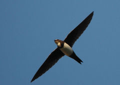
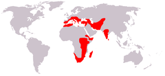
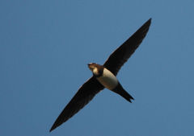
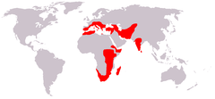

| Alpine Swift | |
|---|---|
|  | |
| Conservation status | |
| Binomial name | |
| Tachymarptis melba (Linnaeus, 1758) |
|
|  | |
| Distribution; see text for details |
| Alpine Swift | |
|---|---|
|  | |
| Conservation status | |
| Binomial name | |
| Tachymarptis melba (Linnaeus, 1758) |
|
|  | |
| Distribution; see text for details |
The Alpine Swift (Tachymarptis melba) syn. (Apus melba) is a small bird, superficially similar to a large Barn Swallow or House Martin. It is, however, completely unrelated to those passerine species, since swifts are in the order Apodiformes. The resemblances between the groups are due to convergent evolution, reflecting similar life styles.
These birds have very short legs which they use only for clinging to vertical surfaces. The scientific name comes from the Ancient Greek απους, apous, meaning "without feet". They never settle voluntarily on the ground.
Alpine Swifts breed in mountains from southern Europe to the Himalaya. Like Common Swifts, they are strongly migratory, and winter much further south in southern Africa. They wander widely on migration, and are regularly seen in much of southern Europe and Asia. The species seems to have been much more widespread during the last ice age, with a large colony breeding for example at Komarowa Cave near Częstochowa, Poland, around 40,000-20,000 years ago (Tomek & Bocheński 2005). Dubrovnik is notable for the large flocks of alpine swifts which nest in the old city walls.
Alpine Swifts build their nests in colonies in a suitable cliff hole or cave, laying 2-3 eggs. A swift will return to the same site year after year, rebuilding its nest when necessary. These birds pair for life.
Young swifts in the nest can drop their body temperature and become torpid if bad weather prevents their parents from catching insects nearby.
Alpine Swifts spend most of their lives in the air, living on the insects they catch in their beaks. They drink on the wing, but roost on vertical cliffs or walls.
Alpine Swifts are readily identified by their large size. Their wingspan is 55 cm compared to the 42 cm of Common Swifts. They are black except for a white belly and throat, with a dark neck band separating the white areas. They have a short forked tail and very long swept-back wings that resemble a crescent or a boomerang but may (as in the image) be held stretched straight out. The flight is slower and more powerful than that of their smaller relative.
The call is a drawn-out twittering.

{kind=link}
{kind=link}